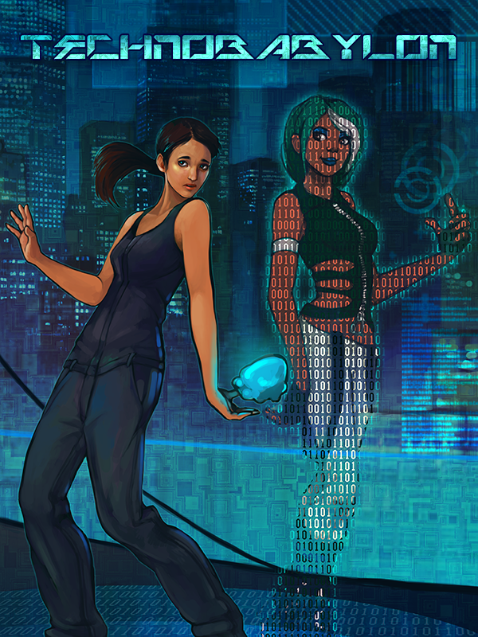

Technobabylon
Technobabylon
Details
|  | |
| Playtime | Not Played |
| Last Activity | Never |
| Added | 2023-08-11 0:29:07 |
| Modified | 2025-10-02 9:37:45 |
| Completion Status | Not Played |
| Library | Steam |
| Source | Steam |
| Platform | Macintosh PC (Linux) PC (Windows) |
| Release Date | 2015-05-21 |
| Community Score | 77 |
| Critic Score | 81 |
| User Score | |
| Genre | Adventure Indie Point-and-click Role-playing (RPG) |
| Developer | Technocrat Games |
| Publisher | Wadjet Eye Games |
| Feature | Single Player |
| Links | Official Website Steam Wikipedia App Store (iPhone) GOG App Store (iPad) Twitch |
| Tag | 2D Adventure Atmospheric Cyberpunk Female Protagonist Futuristic Indie LGBTQ+ Mystery Pixel Graphics Point & Click Puzzle Retro Sci-fi Singleplayer Story Rich |
Description
The year 2087 is upon us — a future where genetic engineering is the norm, the addictive Trance has replaced almost any need for human interaction, and an omnipresent AI named Central powers the city. Its all-seeing CEL police force keeps tabs on everyone, including three people who are about to meet their maker.
As these three struggle to save themselves, they will soon discover a string of conspiracies that threatens not only their lives, but everything they think they know.
- Charlie Regis, an agent of the city’s all-seeing secret police, finds himself blackmailed with the lives of his unborn children. Pushed to the limits by his deceit and his past, how far is he willing to go to save his legacy?
- Latha Sesame, a jobless agoraphobe addicted to the Trance, has become targeted for assassination. Without knowing who to trust, she must face the dangers of “meatspace” and survive a fate that has invisibly ruled her entire life.
- Max Lao, a tech-savvy case officer who joined CEL to forget her criminal past. Now she finds herself torn between two loyalties. When she’s asked to apprehend her best friend and partner, she must choose to follow her friend or the law.
As these three struggle to save themselves, they will soon discover a string of conspiracies that threatens not only their lives, but everything they think they know.